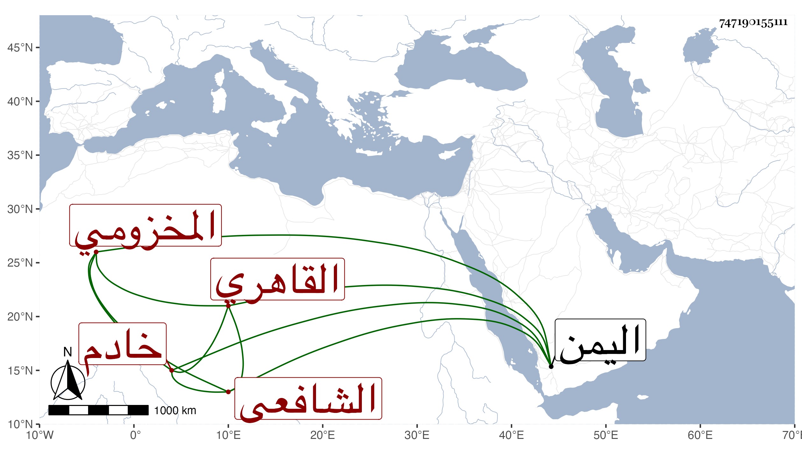

0902Sakhawi.DawLamic.ITO20230111-ara1.EIS1600.747190155111
Biography ID: 747190155111
256
محمد بن عبد الله بن يوسف بن حجاج بن قريش الشمس المخزومي القاهري الشافعي خادم شيخنا ويعرف بابن قريش شيخ يقرأ القرآن رغب في ملازمة شيخنا في كتابة الاملاء عنه وغيرها من تصانيفه كالمقدمة وبذل الماعون وقابلها مع الجماعة عليه ولم ينفك عن المجئ لمجلسه في رمضان بل ولا في كل ليلة لفرش السجادة ونحوها وإصلاح الشمعة وكان ذا خبرة ببلاد اليمن ونحوها فكأنه دخلها وحج وطوف . وأظنه مات بعد الستين وقارب السبعين .
